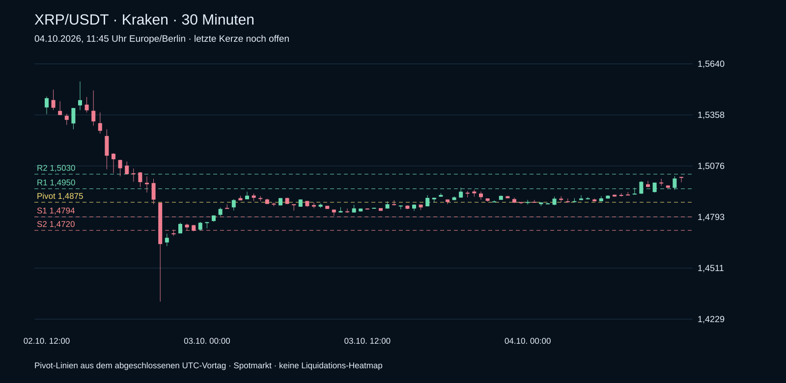

Tagesstand 04.10.2026 · 04.10.2026, 11:45 Uhr
Aktuelle Kraken-Spotkurse und echte 30-Minuten-Kerzen. Technische Marken aus dem abgeschlossenen Vortag. Die ältere Heatmap steht separat unten.
Quellen und Berechnung ansehen
Quelle: Kraken Spot. Tagesvergleich gegen den abgeschlossenen UTC-Vortag. P=(H+L+C)/3; S1=2P-H; R1=2P-L; S2=P-(H-L); R2=P+(H-L). SMA20 aus 20 abgeschlossenen Tageskursen. Long-/Short-Zonen sind Pivot-Szenarien.
XRP · aktueller 30-Minuten-Chart
Kraken Spot · echte Kerzen · Pivot-Marken aus dem UTC-Vortag

XRP/USDT · 1,5011
+0,96 % zum Vortagsschluss
Tagesbereich (UTC): 1,4858–1,5020
Über SMA20 (1,4611); über Tagespivot 1,4875
Support: S1 1,4794 / S2 1,4720
Widerstand: R1 1,4950 / R2 1,5030
Chart ohne Heatmap
Datenstand 03.10.2026

Chart mit Liquidation Heatmap
Datenstand 03.10.2026